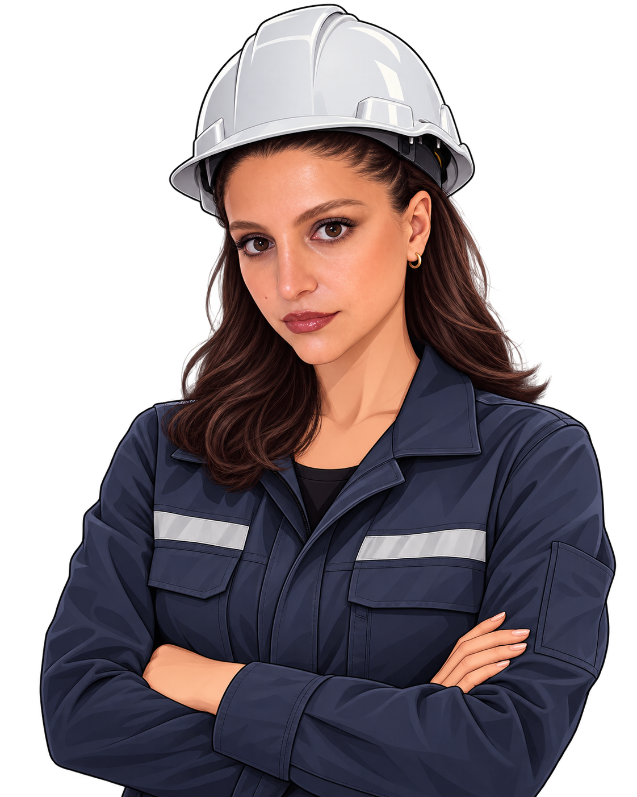
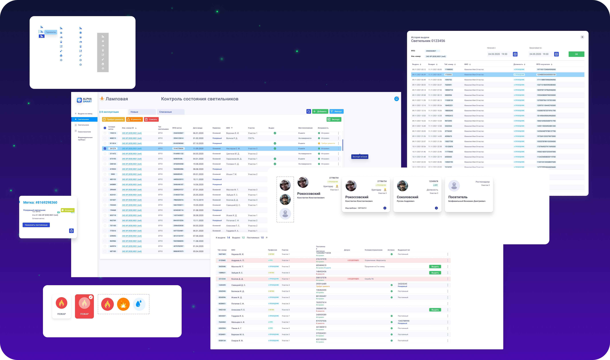

How I designed a safety-critical system by working directly with the people who use it underground.
minePASS LAMP is the digital system for the lamp room at an underground mine — where every transaction is a safety record and every second at shift start counts.

This is not a typical product. I had to understand the physical world first.
Most admin systems exist to improve efficiency. This one exists to support safety. A paper ledger that has an error is an inconvenience. A digital system that has an error in a mine is a safety incident.
I designed this with the weight of that responsibility in mind from the first screen to the last.
I worked with the admins on site — not with stakeholders in a meeting room.
I did not start with wireframes. I spent time with the lamp room administrators — the people who would use this system every working day. I watched how they managed the existing paper process, where it broke down, and what they needed to never worry about.
This is not a system designed for a stakeholder presentation. It is a system designed for a person standing behind a counter at 5:45am, processing miners before a shift starts.
On-site staff responsible for issuing and receiving safety equipment at each shift. Not a technical user. Works under time pressure at shift transitions.
Needs oversight of underground personnel at any moment. Manages employees, reviews reports, and handles escalations from the lamp room.
I mapped both flows end to end before designing a single screen.
The entire lamp room operation comes down to two flows: entry and exit. I mapped both fully — including every error state, every edge case, and every decision point — before opening a design tool.

Full UX flow — decision logic, screen states and error paths mapped before design began
The paper process revealed four problems the digital system had to solve.
40–50 miners arriving in 15 minutes meant the paper system caused queues. Any UI with too many steps or small touch targets would replicate the same problem digitally.
Manual recording meant a lamp could be assigned to the wrong CIN. No system check. No alert. The error would only be discovered during an audit or incident review.
The paper ledger showed cumulative entries, not a live current list. In an emergency, a manager had to manually reconstruct who was still underground from entries and exits.
Paper records were lost, damaged or illegible. There was no way to retrieve reliable equipment history per employee for compliance reporting or incident investigation.
Four principles shaped every decision.
Speed before everything
The terminal must process one miner in under 10 seconds. Scan → verify → confirm. Every additional tap is a problem. If the rush still causes queues, the design has failed.
Make errors impossible
In a safety-critical system, error prevention matters more than error recovery. The UI should make correct actions obvious and wrong actions require deliberate effort to take.
One source of truth
Underground personnel status must be a single live number — not reconstructed from logs, not estimated. Any manager, on any device, sees the same current list.
Designed with the users
Every interaction was reviewed with the lamp room administrators before it was finalised. Their corrections changed the design. Their confidence in the system was the acceptance criteria.
One problem needed two different interfaces.
The lamp room administrator and the shift manager have completely different contexts, needs and environments. Designing one interface for both would mean compromising both. I designed two purpose-built interfaces that share the same data layer.
A tablet mounted at the lamp room counter. Handles one task: process a miner in or out. Designed for speed, large touch targets, and high-contrast feedback at a glance.
A web interface for shift managers and safety officers. Handles everything the terminal doesn't: employee management, live underground status, equipment history, reports.

Terminal flow — Entry (left): QR scan → authorised / error → record. Exit (right): QR scan → confirm items returned → record.
What collaboration with admins revealed that no brief could have told me.
I reviewed every screen and interaction with the lamp room administrators before finalising it. Their corrections were direct and specific — they knew immediately what would and wouldn't work in their environment. Those conversations changed the design in ways no user story could have predicted.
I built a design system to make both interfaces feel like one product.
The terminal and the dashboard share the same employee data, the same CIN structure, and the same status system. I built a unified component library so both interfaces feel like they come from the same product — even though they serve entirely different contexts and users.
The lamp room module was built to be part of a larger platform (minePASS). Consistency meant that when an employee record looked one way in the admin dashboard, it looked the same way in the terminal confirmation screen. No visual relearning. No confusion under pressure.
A component built once, trusted everywhere. That is the point of a system.

Design system — navigation, CIN employee cards, role badges, status system, form fields, SMS notifications, action confirmation modals
NOVA Zinc and Kirovskaya Mine — part of the minePASS platform rollout.
Quantitative post-launch data is not available for this case study. The outcomes below reflect what the system was designed to achieve, observed through admin feedback and operational context.
The most important thing I did on this project was spend time on-site before opening a design tool. The lamp room administrators knew things about their work that no brief, persona or requirements document could have captured — things that directly changed how the terminal behaves, what feedback it gives, and what the admin dashboard prioritises.
Working with them did not slow the process. It made every decision faster to validate, because the people who mattered were in the room.
In safety-critical systems, the cost of designing without the user is not a poor rating or low engagement. It is a safety incident. That changed how I approached every screen.